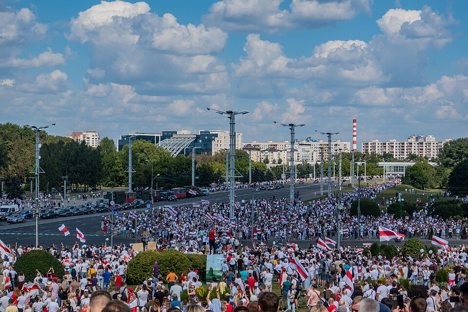

A42-POL-009 // HISTORICAL CLAIM REVIEW
Belarus's 2020 Election and the Crackdown
Assessment: The 2020 process was not credibly free or fair, and serious manipulation is highly likely.


The precise allegation
Belarus's Central Election Commission declared Alexander Lukashenko the winner in August 2020, but opposition evidence, observer restrictions, and widespread reports of coercion made the result untrustworthy. The allegation of systematic state manipulation is well supported; the exact true vote share of Sviatlana Tsikhanouskaya cannot be established because independent observers were excluded and ballot records were not transparently audited.
Chronology and political context
Tsikhanouskaya ran after the arrests or exclusion of other opposition candidates and drew large rallies. Authorities blocked independent monitoring and restricted internet access. After the official result, protests erupted; security forces detained and abused demonstrators. Opposition groups compiled precinct protocols and claimed a much larger victory, while the government rejected their figures.
Primary historical record
Official results, precinct-level protocols published by opposition groups, OSCE assessments, UN human-rights documentation, and contemporary footage provide evidence. The OSCE could not observe the election because Belarus did not invite it in time. Opposition tally projects offer local records but do not cover every precinct or independently authenticate every document.
Corroboration and contrary evidence
The government's restriction of monitoring and the scale of post-election repression are independently documented. Numerous precinct protocols contradicted national totals, and observers reported pressure on election commissions. This supports systematic manipulation, but estimates based on incomplete protocols cannot be treated as a complete national recount or exact vote share.
What remains uncertain
The true tally, extent of ballot stuffing, and degree of coordination between central and local officials remain uncertain. Government custody of records and coercion make independent verification difficult. Claims that a precise alternative result is known exceed available evidence, even as the official result lacks credible transparency.
Calibrated verdict
The 2020 process was not credibly free or fair, and serious manipulation is highly likely. The scale of that manipulation cannot be exactly quantified from the available record. The state's repression after the vote is established; it reinforces concerns about accountability but does not itself calculate the ballot outcome.
What evidence could change this assessment
A preserved, independently audited set of ballots and precinct protocols, with complete observer access and transparent chain of custody, could establish a reliable tally. Authenticated central instructions to falsify returns would clarify command. New evidence of unmanipulated precinct records could refine the scale without restoring credibility to an opaque national process.
Sources and source limits
- OSCE/ODIHR — Statement on Belarus 2020 election observationObserver assessment could not deploy a mission because the invitation was late; it documents the monitoring deficit and reported abuses, not a complete observation.
- United Nations Human Rights Office — Belarus election-related human rights findingsUN reporting documents repression and rights violations; its mandate is human rights, not independent national vote tabulation.
- Viasna Human Rights Centre — 2020 Belarus election documentationBelarusian rights group records detentions and election-related events; its monitoring is valuable but operating under repression limits access and verification.